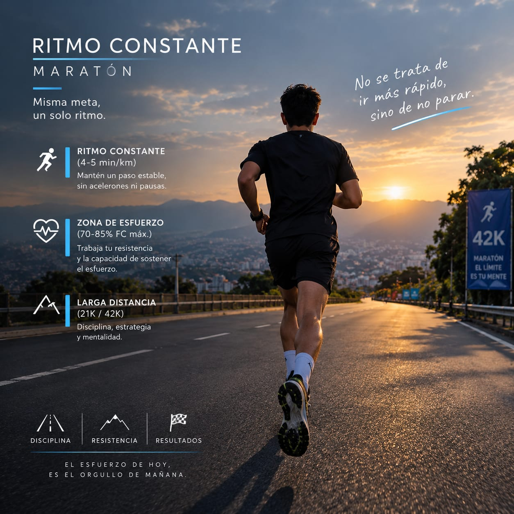
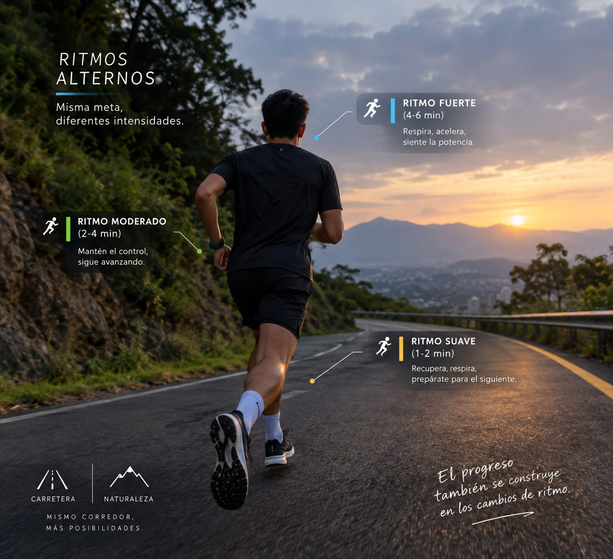

1. Clasificación General de los Métodos
El documento agrupa los métodos de entrenamiento en dos grandes direcciones: métodos continuos y métodos discontinuos.
- Métodos Continuos: Se dividen en invariables y variables.
- Métodos Discontinuos: Aparecen los métodos de intervalos y repeticiones.
- Relación Metabólica: El documento relaciona estas formas de entrenamiento con direcciones aeróbicas, anaeróbicas y mixtas.
2. Métodos de Entrenamiento

Continuo Invariable
Se caracteriza por realizar el trabajo sin interrupciones durante la ejecución. La carga mantiene estandarizados sus parámetros externos a una intensidad moderada y a un ritmo determinado.
- Se utiliza principalmente para el desarrollo de la resistencia general, resistencia aeróbica y la capacidad cardiovascular.
- Se ejecuta mediante ejercicios cíclicos y acíclicos realizados durante un tiempo prolongado.
- Favorece la coordinación de los sistemas encargados del consumo de oxígeno durante el trabajo.
- Especialmente útil en las primeras etapas de preparación.
- Los trabajos prolongados por debajo de esfuerzos máximos favorecen la recuperación cardiovascular y sirven como base para esfuerzos de mayor intensidad.

Continuo Variable (Fartlek)
Dentro de los métodos continuos variables, el Fartlek es uno de los más difundidos. La palabra Fartlek procede del sueco y significa "juego de velocidad".
- Se define como la realización de cambios de ritmo dentro de una actividad continua.
- Las variaciones se producen en la velocidad de carrera durante una determinada distancia.
- Pueden organizarse mediante programas estandarizados o no estandarizados.
3. Direcciones del Entrenamiento
Velocidad y Fuerza
Trabajo de gran esfuerzo físico. Conocido también como Resistencia de la Fuerza o Resistencia Anaeróbica Alactácida. Depende de las reservas de fosfágenos (CrP y ATP).
- Duración: Hasta ~30 segundos
- Recuperación: 1 a 2 minutos
- Frec. Cardíaca: > 180 pulsaciones/min
- Planificación: Al inicio de la sesión principal
Resistencia a la Velocidad
Provoca grandes concentraciones de ácido láctico en el organismo. Busca desarrollar altos valores de resistencia a la velocidad anaeróbica.
- Duración: 30 a 90 segundos
- Recuperación: Hasta bajar la FC
- Frec. Cardíaca: > 190 pulsaciones/min
Resistencia Aeróbica Base
Se caracteriza por una carga pequeña debido a que se realiza un trabajo continuo de bajo esfuerzo sostenido.
- Tiempo Trabajo: > 3 min (Pot. Máx a los 10m)
- Recuperación: 1 a 2 minutos
- Frec. Cardíaca: 130 - 150 pulsaciones/min
Zona Mixta
Zona de trabajo e influencia orgánica donde se combinan esfuerzos aeróbicos y anaeróbicos de manera simultánea o alternada.
- Deportes: Deportes de combate
- Aplicación: Juegos deportivos / colectivos
4. Cuadro Comparativo (Diferencia entre Métodos)
| Método | Característica Principal | Orientación |
|---|---|---|
| Continuo invariable | Trabajo prolongado, intensidad moderada y ritmo constante. | Principalmente aeróbica. |
| Fartlek | Cambios de ritmo durante un trabajo continuo. | Resistencia. |
| Intervalos | Trabajo + recuperación sin restablecimiento completo. | Resistencia y esfuerzos intensos. |
| Repeticiones | Trabajo + recuperación completa. | Velocidad y ejecución de alta calidad. |
| Anaeróbico alactácido | Esfuerzos muy intensos y cortos. | Velocidad y fuerza. |
| Anaeróbico lactácido | Esfuerzos de aproximadamente 30-90 segundos. | Resistencia a la velocidad. |
| Aeróbico | Trabajo continuo de bajo esfuerzo. | Resistencia aeróbica. |
| Aeróbico-anaeróbico | Combinación de esfuerzos aeróbicos y anaeróbicos. | Deportes de combate y juegos deportivos. |